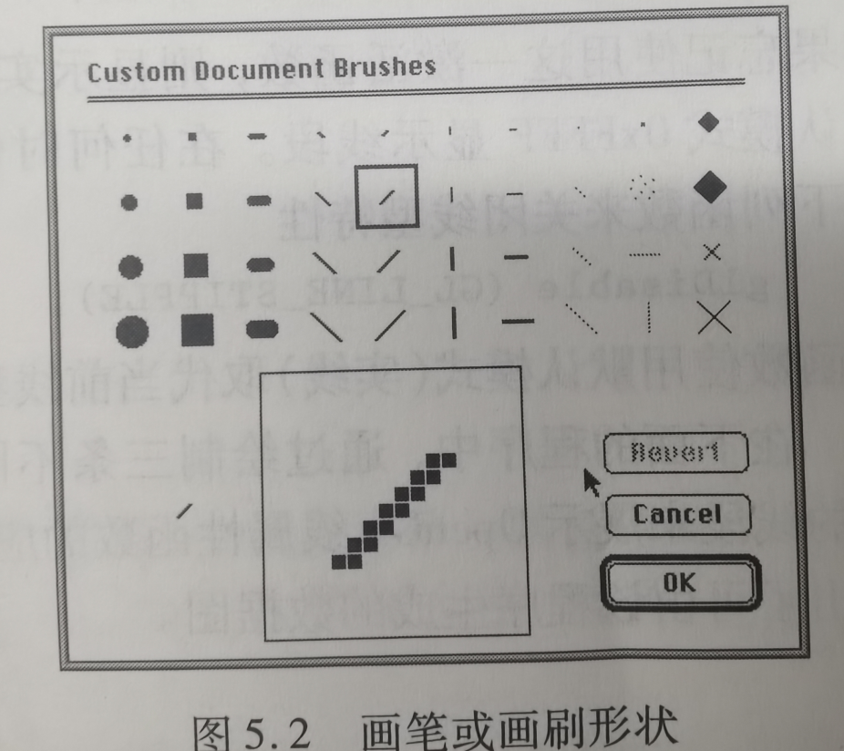
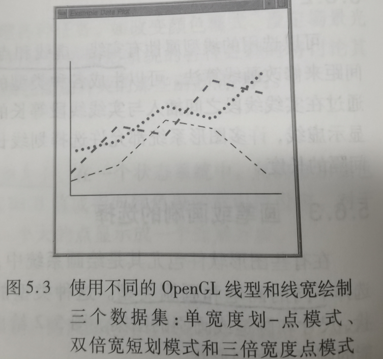
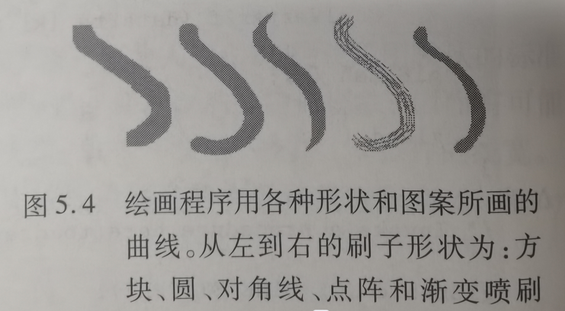
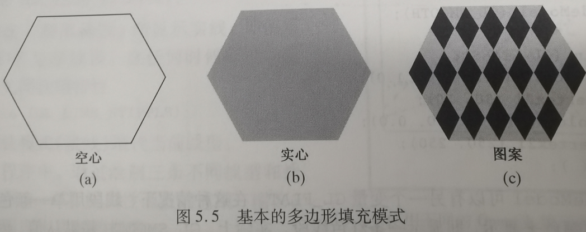
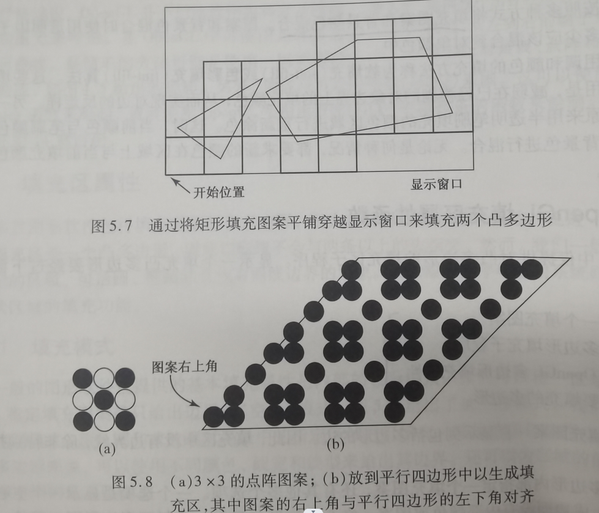

5. 图元的属性
1.点
点的两个属性:颜色和大小
颜色根据指定颜色的方式不同,在属性表或者RGB值指定
大小通常也是专门函数设定,为像素的倍数
使用glColor或者glIndex来指定点的颜色
使用glPointSize来设定点的大小
2.线
线有三个基本属性:颜色,线宽和线型
线宽取决于输出设备的能力
线型通常有实现,虚线和点线等
不同的画笔和笔刷则是这三个属性的综合

glLineWidth()设定线宽
glLineStripple(repeatFactor, pattern) repeatFactor指定的是重复模式,每一位要重复多少次才到下一位,pattern则决定了位显示的样式(也就是线型),例如10101010那就会是断点的虚线
在使用之前需要先激活glEnable(GL_LINE_STRIPPLE) OpenGL当中大部分功能都是默认关闭的,都需要开启才能使用
glShaderModel(GL_SMOOTH)和(GL_FLAT)分别对应的就是软硬边渲染方式

曲线和线段的参数类似

3.面
对多边形区域的填充
有三种填充方式,空心,实心和图案拼贴填充
也可以使用多种方式将填充图案和背景颜色混合

标准的执行逻辑如下:
1.定义第一个填充图案
2.应用多边形填充子程序,激活OpenGL多边形填充特性
3.描述要填充的多边形
glPolygonStripple(图案数据)可以设定填充图案
glEnable(GL_POLYGON_STRIPPLE);开启填充子程序

4.助记小故事
助记小故事--金字塔绘制
小熊需要绘制一个金字塔,首先他将对应的点给选好,然后绘制上颜色和大小,金字塔上面用了一个巨大的绿色宝石点,下面都用的普通红色小点,然后他设计点之间连线,把地面的四条边连成了粗实线,和塔顶的链接用了蓝色移动的虚线.最后对五个面进行设置,把底面设置成了空心的,因为看不到,把正面的设置成了金字塔图案填充,看不太清的侧面则设置成了相同颜色的实色填充.最后画上天空和绿洲,这幅画就画好了